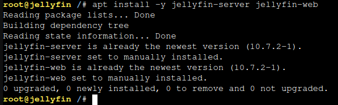

As a beginner into the homelab space Turnkey Linux seems like an amazing option, although I've come to realize it isn't for most cases. Proxmox makes it really easy to deploy prebuilt Turnkey LXC containers that are already mostly setup and its quite amazing which is how I came to use Turnkey. I really do think its a nice solution to people who generally just want to set and forget such as I, although it has many flaws.
My current issue with Jellyfin server is that starting out I used Turnkey's MediaServer LXC package running on my Proxmox server. It has worked amazing for quite a long time until now. Because the container is based off Debian 10 "Buster" which is about 3.5 years old at the time of writing. I am unable to update my Jellyfin packages or even get a proper backport to make it compatible with more up to date smart tvs such as android tv or amazon fire tv.
Current version is 10.8.7
Honestly I do believe Turnkey containers have amazing potential if it were not for these flaws. As for the future in my homelab i cant imagine seeing Turnkey very prevalent in it. I do think things like Docker or even just settings it up youself has much better results in the long run.